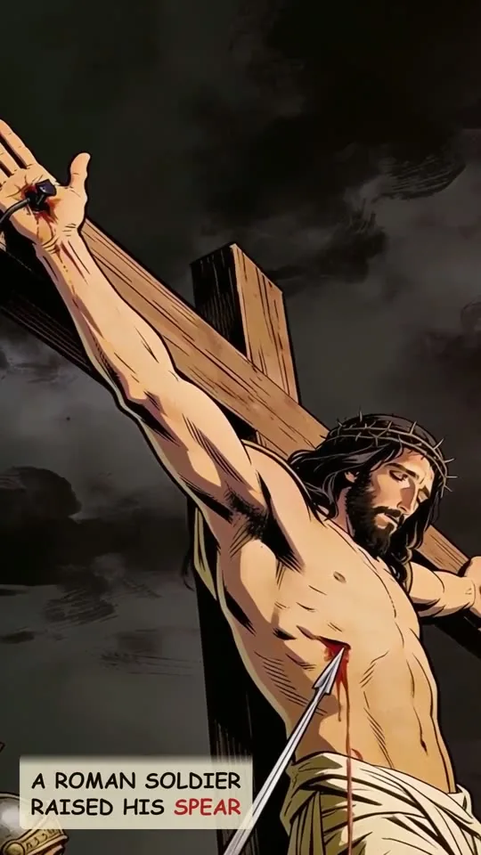

Video will be on YouTube when the series launches.
Zechariah 12:10. The LORD says they shall look upon me whom they have pierced, then mourn for him as for an only son. John cites it at the spear. The pierced one is God himself, the Son. Look at Him and live.
The study behind this
Zechariah prophesied in Jerusalem after the return from exile, around five hundred years before the cross, while the people rebuilt the temple. Chapter 12 looks past their own day to a deliverance of Jerusalem, where God says its people will look on one they have pierced and mourn for him as for an only son.
...they shall look upon me whom they have pierced, and they shall mourn for him, as one mourneth for his only son...
Zechariah 12:10
They shall look on him whom they pierced.
John 19:37
The reading
A Roman soldier drove a spear into a dead man's side to be sure He was gone. He had no idea he was finishing a sentence God wrote five centuries earlier.
In Zechariah, God speaks in the first person about the day His people would pierce someone, and says something staggering:
...they shall look upon me whom they have pierced, and they shall mourn for him, as one mourneth for his only son...
Zechariah 12:10
Read it twice. God says they pierced Me, then, mourn for Him. The pierced man is somehow God Himself, God's own Son.
At the cross, John watched the spear go in, and reached for that exact verse:
They shall look on him whom they pierced.
John 19:37
And here is the mercy: the God they pierced answers not with wrath, but with grace poured out, so that when they finally look, they don't just see what they did. They mourn, and they are forgiven.
The man on that cross was not a victim God failed to save. He was God, pierced for you. Look at Him, and live.
Every quotation is the King James Version, verified word for word against the text.